The question and the dataA pergunta e os dados
We want a quick mitochondrial phylogeny of a few toads of the family Bufonidae using the genomes already in GenBank — and we want it to be reproducible: the same tools, versions and parameters reported in the methods. This is the run used for the screenshots of SPLACE; everything below was produced by the app, and the numbers are the ones it reported.
Queremos uma filogenia mitocondrial rápida de alguns sapos da família Bufonidae usando os genomas que já estão no GenBank — e queremos que seja reprodutível: as mesmas ferramentas, versões e parâmetros relatados nos métodos. Esta é a execução usada nas capturas de tela do SPLACE; tudo abaixo foi produzido pelo app, e os números são os que ele relatou.
A small dataset keeps the example fast. With hundreds of genomes or markers the steps are the same; only the waiting time grows.
Um conjunto pequeno deixa o exemplo rápido. Com centenas de genomas ou marcadores as etapas são as mesmas; só o tempo de espera aumenta.
iThe interfaceA interface
One page with eight steps, the step navigator on the left and the status bar at the bottom. In the animations, the numbered labels point to what to fill in at each step.
Uma página com oito etapas, o navegador de etapas à esquerda e a barra de status embaixo. Nas animações, os rótulos numerados apontam o que preencher em cada etapa.
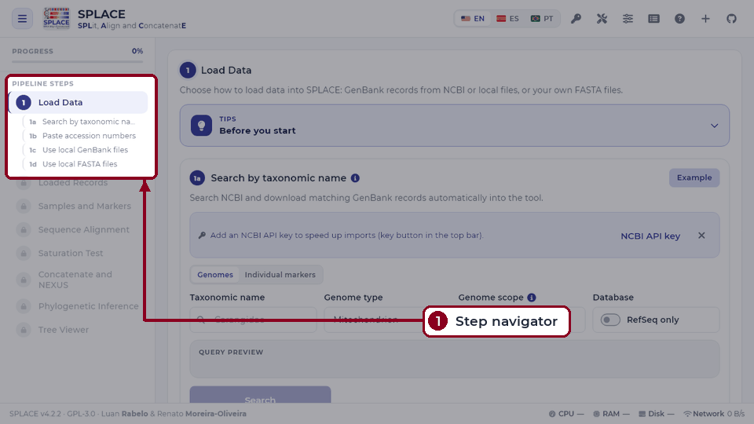
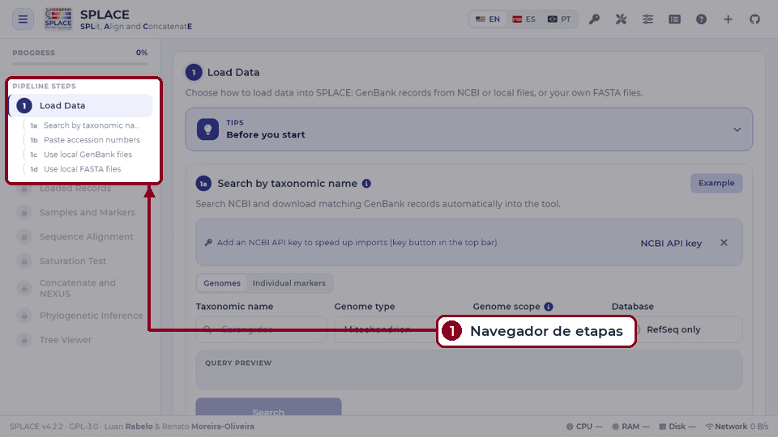
What we didO que fizemos
- Chose the language on the welcome screen and clicked Start App; the tutorial explains every step.
- Checked the tools in the wrench dialog: MAFFT, trimAl, IQ-TREE 3, RAxML-NG, ClipKIT, PhyKIT and the delimitation programs come with the app.
- Added the free NCBI API key (key icon) for faster downloads.
- Escolhemos o idioma na tela de boas-vindas e clicamos em Iniciar; o tutorial explica cada etapa.
- Conferimos as ferramentas no diálogo da chave inglesa: MAFFT, trimAl, IQ-TREE 3, RAxML-NG, ClipKIT, PhyKIT e os programas de delimitação vêm com o app.
- Adicionamos a chave gratuita de API do NCBI (ícone de chave) para downloads mais rápidos.
Documents/SPLACE/projects; New project (+ in the top bar) starts another analysis without closing the app.Documentos/SPLACE/projects; Novo projeto (+ na barra superior) começa outra análise sem fechar o app.1Load DataCarregar Dados
The genomes come straight from NCBI: no manual download.
Os genomas vêm direto do NCBI: nada de download manual.
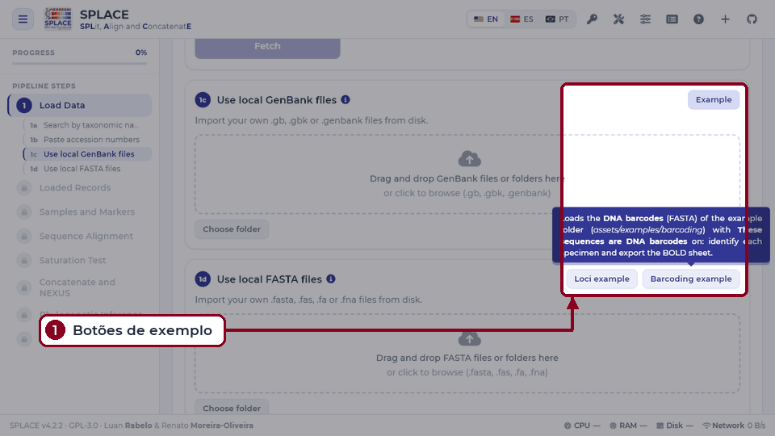
What we didO que fizemos
- Typed
Bufonidaein 1a, chose Genomes and Mitochondrion, with complete and partial genomes. - In the review window, SPLACE listed what NCBI returned, split into complete, partial and UNVERIFIED records.
- Selected the records for the example and clicked Import; the download window showed each record arriving.
- Digitamos
Bufonidaeem 1a, escolhemos Genomas e Mitocôndria, com genomas completos e parciais. - Na janela de revisão, o SPLACE listou o que o NCBI devolveu, separado em registros completos, parciais e UNVERIFIED.
- Selecionamos os registros do exemplo e clicamos em Importar; a janela de download mostrou cada registro chegando.
2Loaded RecordsRegistros Carregados
Names and taxonomy are checked before anything is aligned.
Nomes e taxonomia são conferidos antes de qualquer alinhamento.
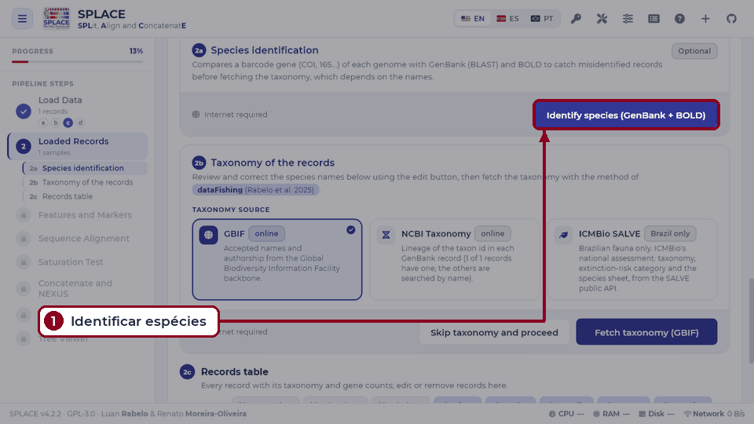
What we didO que fizemos
- 2a (optional): the species identification compares a barcode gene of each genome with GenBank (BLAST) and BOLD and flags misidentified records.
- 2b: fetched the classification with the dataFishing method, kingdom to family, used later in the sequence names and the tree colours.
- 2c: looked at the table — every record with its taxonomy and number of PCGs, rRNAs and tRNAs.
- 2a (opcional): a identificação de espécies compara um gene de barcode de cada genoma com o GenBank (BLAST) e o BOLD e aponta registros mal identificados.
- 2b: obtivemos a classificação com o método do dataFishing, de reino a família, usada depois nos nomes das sequências e nas cores da árvore.
- 2c: olhamos a tabela — cada registro com sua taxonomia e número de PCGs, rRNAs e tRNAs.
3Features and MarkersAnotações e Marcadores
The same gene gets the same name in every genome; then see what each sample has before choosing the markers.
O mesmo gene recebe o mesmo nome em todos os genomas; depois veja o que cada amostra tem antes de escolher os marcadores.
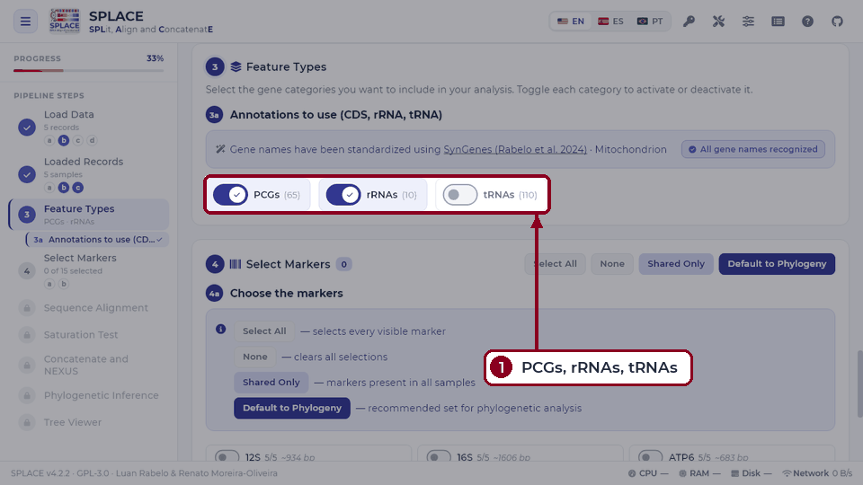
What we didO que fizemos
- 3a: turned on PCGs and rRNAs and left tRNAs out; SynGenes standardized the annotations (COX1, COI, cox1… become COI): All gene names recognized.
- 3b: the 15 standard markers (13 PCGs, 12S and 16S) were present in all 5 samples (5/5); for a fast example we kept 4 protein-coding markers (including ATP6, COI and CYTB).
- The heatmaps (3c, 3d) confirmed there were no missing or truncated genes.
- 3a: ligamos PCGs e rRNAs e deixamos os tRNAs de fora; o SynGenes padronizou as anotações (COX1, COI, cox1… viram COI): Todos os nomes de genes reconhecidos.
- 3b: os 15 marcadores padrão (13 PCGs, 12S e 16S) estavam presentes nas 5 amostras (5/5); para um exemplo rápido mantivemos 4 marcadores codificadores (entre eles ATP6, COI e CYTB).
- Os heatmaps (3c, 3d) confirmaram que não havia genes ausentes ou truncados.
4Sequence AlignmentAlinhamento de Sequências
Codon-aware alignment and trimming that keeps the reading frame.
Alinhamento preservando códons e trimagem que mantém a fase de leitura.
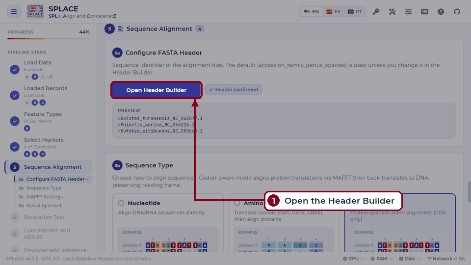
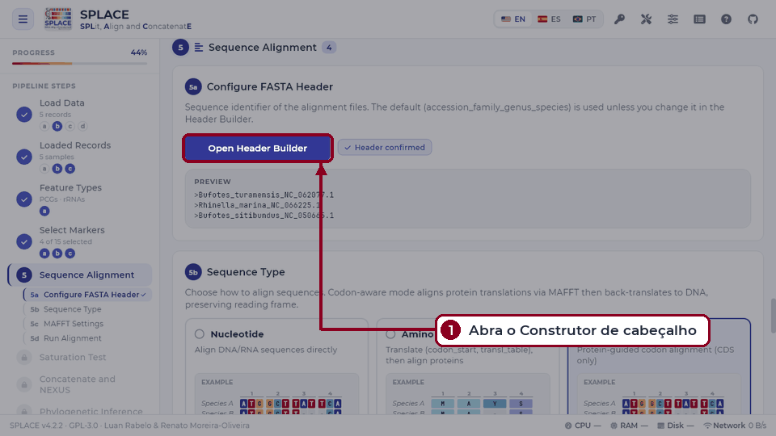
What we didO que fizemos
- 4a: names as
Genus_species_accession. - 4b: Codon-aware — each CDS translated with the vertebrate mitochondrial code (2), aligned as protein with MAFFT and back-translated.
- 4d: trimmed with trimAl
-automated1 -backtrans, removing whole codons.
- 4a: nomes como
Gênero_espécie_acesso. - 4b: Preservando códons — cada CDS traduzida com o código mitocondrial de vertebrados (2), alinhada como proteína no MAFFT e retrotraduzida.
- 4d: trimado com o trimAl
-automated1 -backtrans, removendo códons inteiros.
5Saturation TestTeste de Saturação
Is the 3rd codon position still informative?
A 3ª posição do códon ainda é informativa?
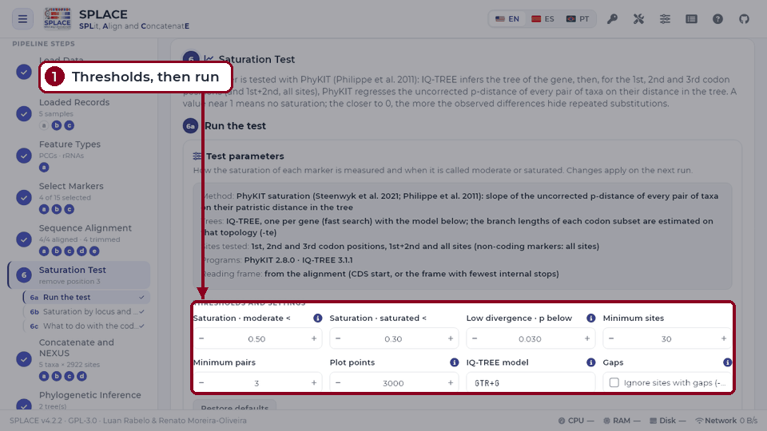
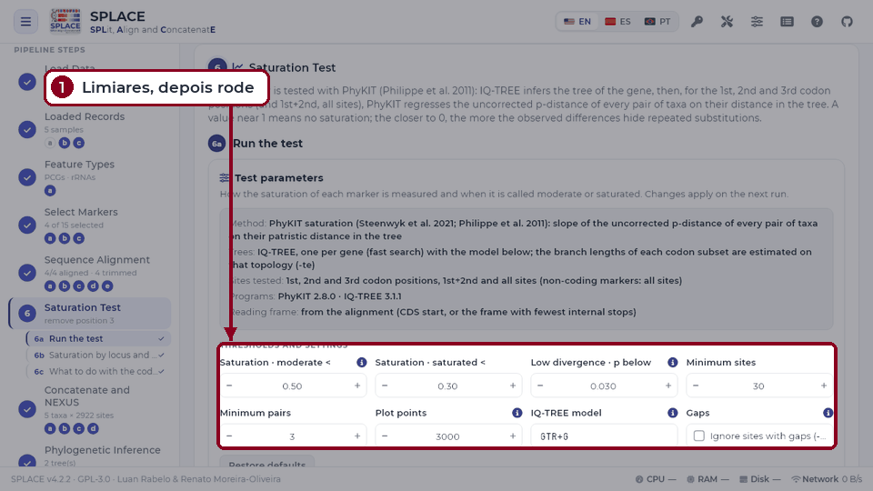
What we didO que fizemos
- Ran PhyKIT saturation for each marker: IQ-TREE infers the gene tree and PhyKIT regresses p-distances on tree distances for the 1st, 2nd and 3rd positions.
- Read the plots: the 3rd position levels off below the diagonal.
- Applied the pooled recommendation in 5c.
- Rodamos a saturação do PhyKIT em cada marcador: o IQ-TREE infere a árvore do gene e o PhyKIT faz a regressão das distâncias p sobre as distâncias na árvore para as posições 1, 2 e 3.
- Lemos os gráficos: a 3ª posição achata abaixo da diagonal.
- Aplicamos a recomendação conjunta em 5c.
6Concatenate and NEXUSConcatenar e NEXUS
One matrix, partitioned by locus and codon position.
Uma matriz, particionada por locus e posição do códon.
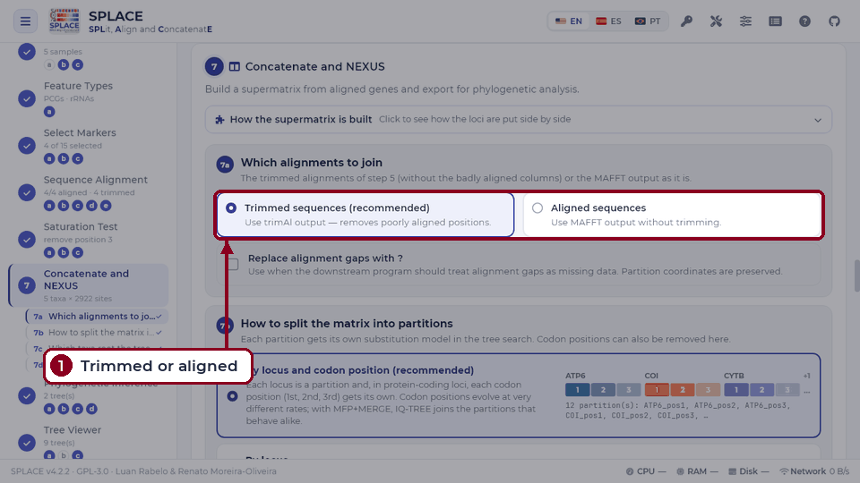
What we didO que fizemos
- 6a: used the trimmed alignments.
- 6b: partitions by locus and codon position, with the 3rd position removed as recommended.
- 6c: Bufotes turanensis as the outgroup; 6d: built the matrix (NEXUS, PHYLIP, FASTA and the partition files).
- 6a: usamos os alinhamentos trimados.
- 6b: partições por locus e posição do códon, com a 3ª posição removida como recomendado.
- 6c: Bufotes turanensis como grupo externo; 6d: construímos a matriz (NEXUS, PHYLIP, FASTA e os arquivos de partição).
7Phylogenetic InferenceInferência Filogenética
Two programs, the same matrix, at the same time.
Dois programas, a mesma matriz, ao mesmo tempo.
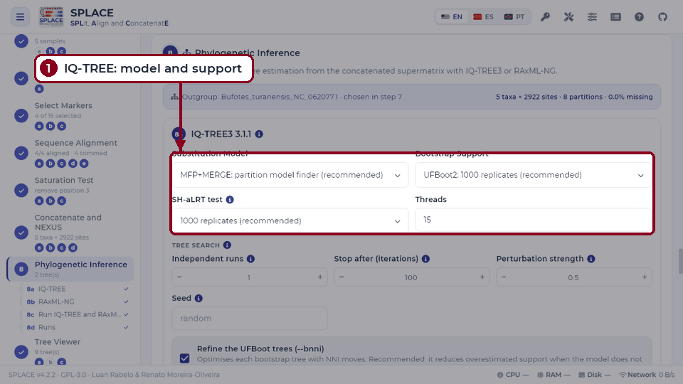
What we didO que fizemos
- 7a: IQ-TREE 3 with ModelFinder (MFP+MERGE), UFBoot2 and SH-aLRT.
- 7b: RAxML-NG with models chosen by MOOSE (BIC), fast search, SH-aLRT and EBG support.
- 7c: ran both at once, the threads split between them; 7d lists each run with its command and files.
- 7a: IQ-TREE 3 com ModelFinder (MFP+MERGE), UFBoot2 e SH-aLRT.
- 7b: RAxML-NG com modelos escolhidos pelo MOOSE (BIC), busca rápida, suporte SH-aLRT e EBG.
- 7c: rodamos os dois juntos, com as threads divididas; 7d lista cada execução com seu comando e arquivos.
7e Species delimitation then runs mPTP (PTP and mPTP models) and GMYC on these ML trees, and ASAP and ABGD on the alignments.
7e Delimitação de espécies roda em seguida o mPTP (modelos PTP e mPTP) e o GMYC nessas árvores de ML, e o ASAP e o ABGD nos alinhamentos.
8Tree ViewerVisualizar Árvore
From the tree to the published figure and the methods text.
Da árvore à figura publicada e ao texto de métodos.
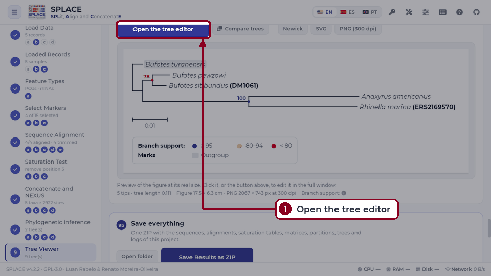
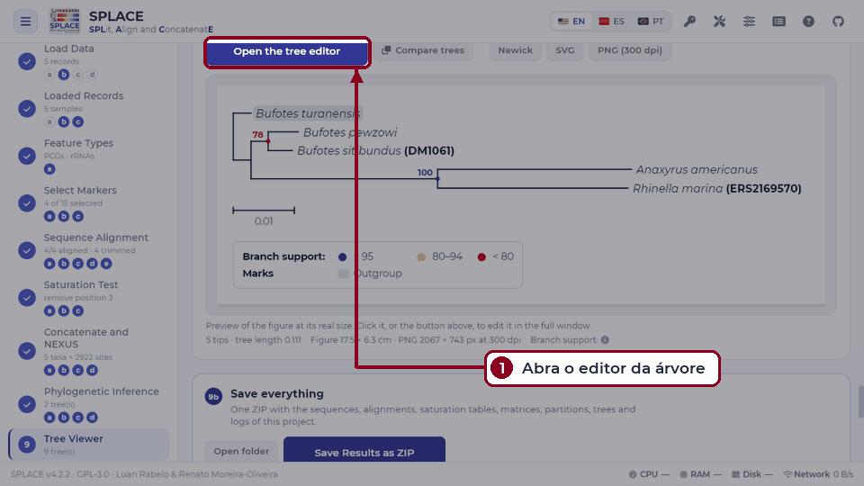
What we didO que fizemos
- 8a: rooted on the outgroup, coloured by genus and exported SVG and PNG at 300 dpi (17.5 cm wide).
- Compared the IQ-TREE and RAxML-NG trees face to face.
- 8b: saved the project as one ZIP; 8c: copied the methods paragraph and the references.
- 8a: enraizamos no grupo externo, colorimos por gênero e exportamos SVG e PNG a 300 dpi (17,5 cm de largura).
- Comparamos frente a frente as árvores do IQ-TREE e do RAxML-NG.
- 8b: salvamos o projeto em um ZIP; 8c: copiamos o parágrafo de métodos e as referências.
Also in SPLACETambém no SPLACE
| Function | Função | Where | Onde | Programs | Programas |
|---|---|---|---|---|---|
| Individual markers (COI, CYTB…) of a group without genomes, joined by speciesMarcadores individuais (COI, CYTB…) de um grupo sem genomas, reunidos por espécie | 1a | SynGenes, NCBI E-utilities | |||
| Your own FASTA (target capture, hundreds of loci)Seus próprios FASTA (captura de alvos, centenas de loci) | 1d | SynGenes | |||
| Species identification and corrected GenBank filesIdentificação de espécies e arquivos GenBank corrigidos | 2a–2b | BLAST, BOLD ID Engine, dataFishing, SynGenes | |||
| DNA barcodes: identification and BOLD submission spreadsheet (.xlsx)DNA barcodes: identificação e planilha de submissão do BOLD (.xlsx) | 2 (FASTA) | BLAST, BOLD ID Engine, GBIF | |||
| Species delimitation on trees and alignmentsDelimitação de espécies em árvores e alinhamentos | 8e | mPTP, LSD2 + GMYC, ASAP, ABGD |
How to citeComo citar
Oliveira RRM, Vasconcelos S, Oliveira G (2022) SPLACE: A tool to automatically SPLit, Align, and ConcatenatE genes for phylogenomic inference of several organisms. Frontiers in Bioinformatics 2:1074802. doi:10.3389/fbinf.2022.1074802
Cite also the tools the run used — SynGenes (github.com/luanrabelo/SynGenes) and dataFishing (github.com/luanrabelo/dataFishing) among them. Step 8c of the app writes the list for your project, with what each tool did.
Cite também as ferramentas usadas — entre elas o SynGenes (github.com/luanrabelo/SynGenes) e o dataFishing (github.com/luanrabelo/dataFishing). A etapa 8c do app escreve a lista do seu projeto, com o que cada ferramenta fez.